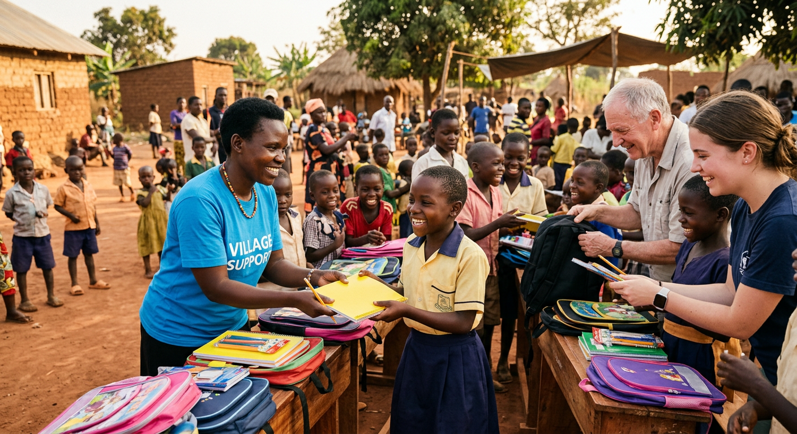

S.E.I accompagne orphelins, veuves et personnes vulnérables
vers un avenir digne. Basée à Les Andelys, notre association
agit avec humanisme, sans distinction ni frontière.
Accompagnement moral, matériel et éducatif des enfants privés de soutien familial.
Protection et accompagnement social des femmes en situation de vulnérabilité.
Promotion des droits et de la dignité des personnes marginalisées ou exclues.
Interventions éducatives, sociales et de plaidoyer pour un changement durable.
Devenez membre et participez
activement à nos projets.
Votre générosité finance des
programmes essentiels.
Donnez votre temps et vos
compétences pour aider.

« La solidarité n'est pas un
acte de charité, c'est un acte
de dignité humaine. »
Ensemble, construisons un monde où chaque orphelin, chaque veuve,
chaque personne vulnérable trouve soutien, espoir et dignité.